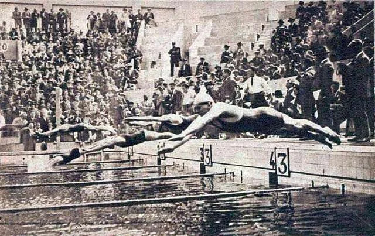

Présentation Générale
L’épreuve du 400 mètres 4 nages aux Jeux Olympiques est une des courses les plus exigeantes et spectaculaires de la natation. Un seul athlète doit enchaîner les quatre styles de nage dans un ordre précis : papillon, dos, brasse et nage libre, sur une distance de 100 mètres chacun. Cette épreuve demande une polyvalence exceptionnelle, combinant endurance, puissance, et maîtrise technique dans chaque nage. Les nageurs doivent également gérer leur énergie et leur stratégie pour exceller dans toutes les sections, sans faiblir en fin de course. C’est une véritable démonstration de talent et de détermination, souvent marquée par des records et des performances inoubliables.
